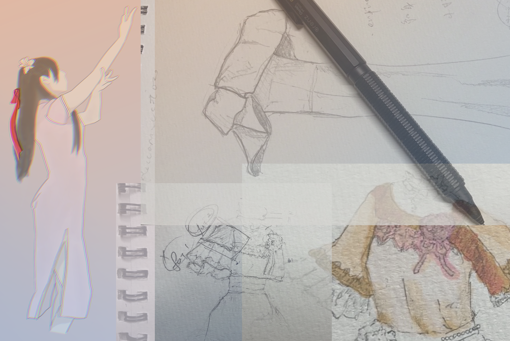
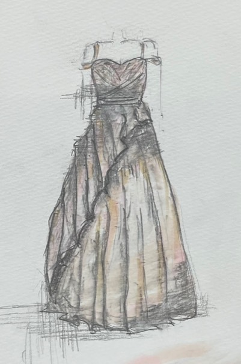
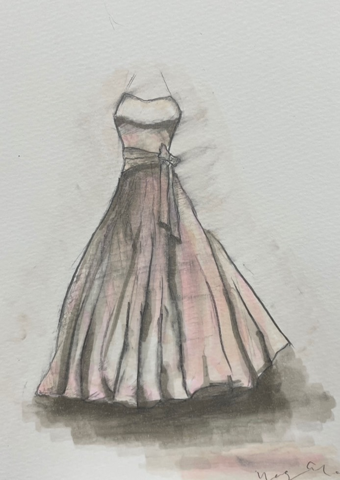

UI/UXについて考えたこと
現在，受講している授業において，ある地元企業の方々と 現場見学や，オンラインミーティングを進めつつ，実際にDX化を行いました．
Uber eatのようなアプリケーション制作を3人で行いました．私はフロント担当でした． スマホのフロント画面について，デザインが好きなので色々考えました．
現場は工場でした．工場員の方は年配の方までいらっしゃるので， 全年齢対象のアプリケーションを作成するため， UIについてスーパーのセルフレジや，ATMのUIを参考に， ボタンに立体感を持たせたり，色を認識しやすいようにしました．
*UIの例(ボタン)

使う対象を想像して，その人たちがどのような生活を送っているのか考えながら，何を参考にすれば良いか考えることが面白いです．
＿＿＿＿＿＿＿＿＿＿＿＿＿＿＿＿＿＿＿＿＿＿
＿＿＿＿＿＿＿＿＿＿＿＿＿＿＿＿＿＿＿＿＿＿
  ↑日ごろ書いている絵です．
特に衣装(ドレス)を描いています．ウェディングドレスに至っては，これという答えがなく，人それぞれに正解に近いものを求められるので，骨格から，肌色，顔が若く見えるのか，大人びているのか，撫で肩etc...と一人一人に求められるものが異なってくるところが考えていて，面白いポイントだと思います．芸能人の方が，"白って200種類あんねん"と言うワードがひとときの話題となっていましたが，ほんとにその通りで，象牙色，オフホワイト...と肌に合わせて，生地の色を選んでいく...とったようになるんだと思います．